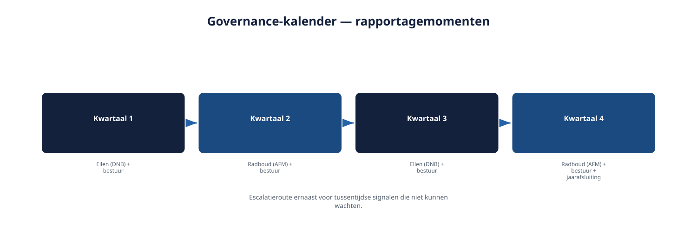
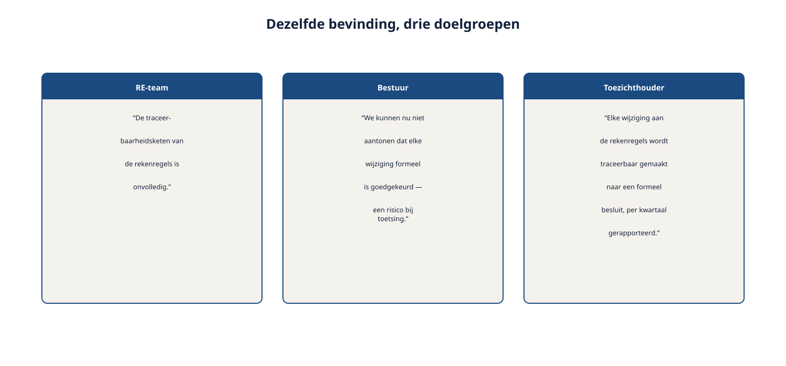

Deel 28 — Expert: governance op stelselniveau
Reader · Ductus-cursus Requirements Engineering · niveau 3 (expert) · deel 28 van 30
Cursus Requirements Engineering — Ductus. Deze cursus bereidt voor op de CPRE-certificering van IREB, inclusief de Expert Level-eisen rond praktijk en strategisch advies, en is uitdrukkelijk geen vervanging van het officiële syllabus- en examenmateriaal.
Leerdoelen
Na dit deel kun je:
- het verschil toepassen tussen uitvoerend RE-werk en strategisch adviseren aan een bestuur;
- een doorlopend governance-ritme opzetten voor de omgang met toezichthouders;
- je vakoordeel verdedigen tegenover mensen met andere expertise, zonder je eigen vakgebied te verlaten;
- je voorbereiden op de rol van adviseur in een boardsimulatie.
28.1 Van rapporteren aan, naar adviseren van
Tot nu toe rapporteerde Ruben aan Bram en Hetty over de status van zijn werk (deel 19, niveau 2: het rapportageformat). Nu wordt hem gevraagd om het bestuur strategisch te adviseren: niet "hier is de stand van zaken", maar "hier is wat ik, gezien mijn vakkennis, aanraad te doen, en waarom".
Dit is een fundamenteel andere positie. Rapporteren beschrijft een situatie neutraal, met feiten en een status. Adviseren vraagt een eigen, beargumenteerd standpunt in te nemen — met behoud van de rolgrens uit deel 1 (niveau 1): opties en consequenties leveren, het uiteindelijke besluit blijft bij het bestuur. Het verschil met rapporteren is dat een advies een richting aangeeft binnen die opties, onderbouwd vanuit vakkennis, zonder de rolgrens te overschrijden door het besluit zelf te claimen.
28.2 Een governance-ritme voor toezicht
Ellen Voskuijl en Radboud Achterberg opereren niet incidenteel (zoals in deel 23, waar hun eerste elicitatie plaatsvond), maar structureel, met een eigen terugkerend ritme. Een Expert-niveau taak is het opzetten van een governance-ritme: een vaste, herhaalbare structuur waarin toezicht wordt bediend, in plaats van elke keer opnieuw ad hoc te reageren op vragen.
Elementen van een governance-ritme:
- Een vaste rapportagecyclus (bijvoorbeeld per kwartaal), afgestemd op het eigen ritme van elke toezichthouder.
- Een vast format (voortbouwend op het rapportageformat uit deel 19, niveau 2), nu met een aparte sectie per toezichthouder, gezien hun verschillende focus (prudentieel versus gedragstoezicht).
- Een escalatieroute voor tussentijdse signalen die niet tot het volgende reguliere moment kunnen wachten — vergelijkbaar met de escalatiecriteria uit deel 14, nu toegepast op toezichtrelaties.

Waarom dit Expert-niveau werk is, en geen Specialist-werk: een Specialist beoordeelt een individueel document of dilemma (deel 23-26). Een Expert ontwerpt de structuur waarbinnen dat soort beoordelingen voortaan systematisch, herhaalbaar en tijdig plaatsvinden — een organisatorisch instrument, niet een individueel oordeel.
28.3 Je vakoordeel verdedigen tegenover andere expertise
Het bestuur bestaat niet uit requirements engineers. Hetty kijkt vanuit bestuurlijke verantwoordelijkheid, Ellen vanuit prudentieel toezicht, Radboud vanuit gedragstoezicht — elk met een eigen vocabulaire en eigen prioriteiten. Een Expert moet zijn RE-vakoordeel kunnen verantwoorden in taal die voor deze partijen betekenisvol is, zonder de inhoudelijke scherpte te verliezen.
Vertaal, verlies de kern niet. "De traceerbaarheidsketen is onvolledig" wordt voor een bestuurslid eerder: "we kunnen op dit moment niet aantonen dat elke wijziging aan de rekenregels formeel is goedgekeurd — dat is een risico bij een eventuele toetsing." Dezelfde bevinding, andere taal, dezelfde scherpte.
Verdedig het oordeel, niet de persoon. Wanneer Ellen of Radboud kritisch doorvraagt op een conclusie, blijft het antwoord gericht op de onderbouwing (de audit, het bewijs) — niet op verdediging van wie het werk oorspronkelijk deed (vergelijk deel 23: het gaat niet om het veroordelen van Tobias, maar om het beoordelen van het document).
Erken de grens van het eigen vakgebied. Een juridisch oordeel (deel 26) of een puur actuarieel oordeel (Marloes' domein) hoort niet bij de requirements engineer thuis, ook niet op Expert-niveau — de rolgrens blijft, alleen het podium waarop hij wordt toegepast, wordt groter en zichtbaarder.

28.4 Voorbereiding op de boardsimulatie
Deel 30 sluit de cursus af met een boardsimulatie: een verdediging van de volledige beoordeling van het Kwintes-document tegenover vier rollen. Dit deel bereidt daar inhoudelijk op voor.
Ken elke rol se belang, niet alleen hun functie. Hetty wil weten of de Stelselovergang op koers blijft. Bram wil weten of de aanpak praktisch uitvoerbaar is binnen het programma. Ellen wil aantoonbaarheid van financiële beheersing. Radboud wil aantoonbaarheid van zorgvuldige informatievoorziening aan deelnemers.
Bereid een kernboodschap voor, geen volledige herhaling van elk detail. Een boardsimulatie vraagt, net als een goed advies (paragraaf 28.1), een heldere richting met de belangrijkste onderbouwing — niet elk detail van vier vakpapers (deel 23-26) hardop herhalen.
Verwacht productieve tegenspraak, geen vijandigheid. Elke rol heeft, zoals in deel 22 (niveau 2) al gold, een legitiem perspectief. Kritische vragen zijn een kans om de onderbouwing te tonen, geen aanval om af te weren.
Wat verandert er op Expert-niveau?
Waar de Specialist-trap (deel 23-26) vroeg om een individueel, diepgaand oordeel te verantwoorden, vraagt de Expert-rol om dat oordeel te vertalen naar bruikbaar advies voor bestuur en toezicht, in te bedden in een herhaalbare governance-structuur, en tegelijk anderen in de organisatie te helpen datzelfde niveau te bereiken (deel 27).
Samenvatting
- Adviseren verschilt van rapporteren: een advies geeft een beargumenteerde richting binnen de opties, zonder de rolgrens te overschrijden.
- Een governance-ritme voor toezicht bestaat uit een vaste rapportagecyclus, een format per toezichthouder, en een escalatieroute.
- Vakoordeel verdedigen tegenover andere expertise vraagt vertaling zonder verlies van scherpte, verdediging van het oordeel (niet de persoon), en erkenning van de eigen vakgrens.
- Voorbereiding op een boardsimulatie: ken elk belang, bereid een kernboodschap voor, verwacht productieve tegenspraak.
Begrippen
strategisch adviseren · governance-ritme · escalatieroute · doelgroepgerichte vertaling
Leeswijzer naar het volgende deel
Deel 29 brengt de vier Specialist-audits (deel 23-26) samen tot één requirements-auditmethodiek, als directe voorbereiding op de masterproef in deel 30.